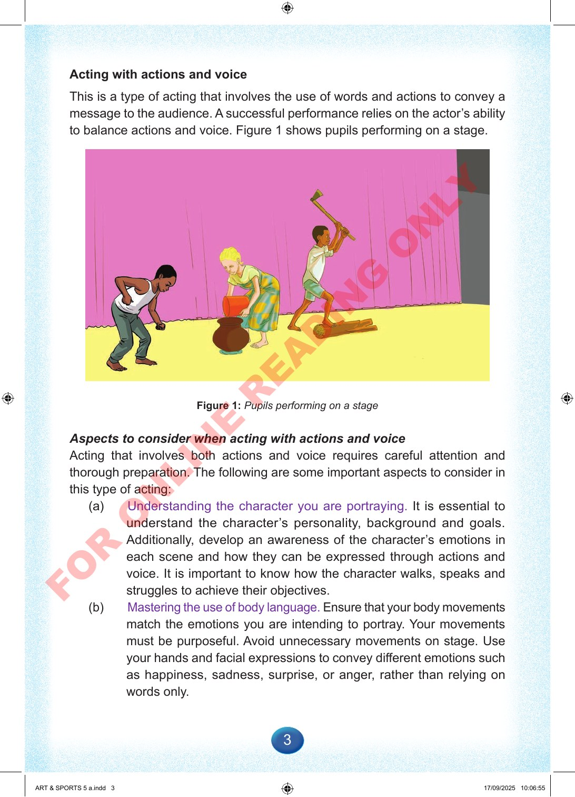

3
Acting
with
actions
and
voice
This
is
a
type
of
acting
that
involves
the
use
of
words
and
actions
to
convey
a
message
to
the
audience.
A
successful
performance
relies
on
the
actor’s
ability
to
balance
actions
and
voice.
Figure
1
shows
pupils
performing
on
a
stage.
Figure
1:
Pupils
performing
on
a
stage
Aspects
to
consider
when
acting
with
actions
and
voice
Acting
that
involves
both
actions
and
voice
requires
careful
attention
and
thorough
preparation.
The
following
are
some
important
aspects
to
consider
in
this
type
of
acting:
(a)
Understanding
the
character
you
are
portraying.
It
is
essential
to
understand
the
character’s
personality,
background
and
goals.
Additionally,
develop
an
awareness
of
the
character’s
emotions
in
each
scene
and
how
they
can
be
expressed
through
actions
and
voice.
It
is
important
to
know
how
the
character
walks,
speaks
and
struggles
to
achieve
their
objectives.
(b)
Mastering
the
use
of
body
language.
Ensure
that
your
body
movements
match
the
emotions
you
are
intending
to
portray.
Your
movements
must
be
purposeful.
Avoid
unnecessary
movements
on
stage.
Use
your
hands
and
facial
expressions
to
convey
different
emotions
such
as
happiness,
sadness,
surprise,
or
anger,
rather
than
relying
on
words
only.
ART
&
SPORTS
5
a.indd
3
ART
&
SPORTS
5
a.indd
3
17/09/2025
10:06:55
17/09/2025
10:06:55
F
O
R
O
N
L
I
N
E
R
E
A
D
I
N
G
O
N
L
Y